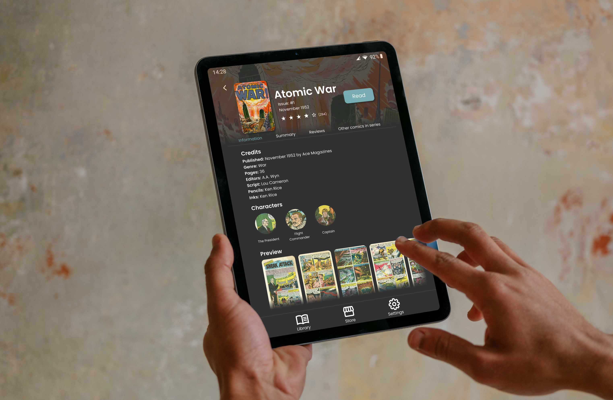
TL;DR
Most digital comic platforms solve the wrong problem. The panel-by-panel reading mode fixes the zoom issue by destroying the page which is exactly the thing that makes comics work. For my MSc dissertation, I researched why digital comic reading is broken and designed ZAP!, a tablet-first app that keeps the page intact and solves navigation differently. The centrepiece: a visual scrubber inspired by video editing timelines. The following case study outlines the end-to-end, user centred design process, from literature review to SUPR-Q A validated UX quality benchmark evaluated prototype.
-
outcome:
MSc in Human-Computer Interaction Design (distinction) -
role:
Solo designer and researcher -
timeline:
12 months, submitted Oct 2021 -
deliverables:
HiFi prototype, personas, IA Information Architecture — the structural design of content and navigation. , design requirements, SUPR-Q evaluation
The problem in plain sight
Anyone who reads comics digitally knows the frustration, even if they've never put it into words. Your
collection is split across multiple platforms, your phone isn't the right shape, and the panel-by-panel
reading
mode that's supposed to help, strips away exactly the peripheral context that makes a comic page
work.
This isn't a niche complaint. It's a structural problem with how the industry moved online and one that
had been almost entirely overlooked in HCI research relative to e-reading more broadly. That gap was the
starting point for my MSc dissertation.
My research question was straightforward: why is reading comics digitally such a frustrating experience,
and what would a better one actually look like?
Understanding the space
Before I could design anything, I needed to understand the landscape — both academically
and
practically.
I started with a literature review spanning comics theory, the history of digital publishing,
e-reader
usability research, and the specific challenges of translating comics to screen. Scott McCloud's
work on
the grammar of comics sat alongside academic usability studies and industry post-mortems. The
reading UI
problem isn't just a UX problem — it's a problem rooted in what comics are as a medium.
From there I built a comparative platform analysis: a matrix of around 18 services, scored
across
download numbers, ratings, library size, and payment model. I then chose the three strongest
performers
(ComiXology, MangaToon, and WebToon) for a deep-dive walkthrough of their core user journeys.
What
emerged was a consistent picture: each platform had optimised for its own ecosystem at the
expense of
the reader.
| Platform | Library Size | Device Support | Downloads (Android) ↓ | Rating (Android) | # of Reviews (Android) | Rating (iOS) | # of Reviews (iOS) | Payment Model |
|---|---|---|---|---|---|---|---|---|
| WebToons | / | Android, iOS, Web | 50,000,000 | ★★★★★ | 1,758,748 | ★★★★ | 47,600 | Free |
| ComiXology | 100,000 | Android, Kindle, iOS, Web | 10,000,000 | ★★★★ | 59,879 | ★★★ | 185 | Per comic |
| MangaToons | / | Android, iOS, Web | 10,000,000 | ★★★★ | 496,413 | ★★★★★ | 3,300 | Free, Own currency |
| WebComics | / | Android, iOS | 5,000,000 | ★★★★ | 201,196 | ★★★★★ | 60,900 | Free |
| Cruchyroll Manga | / | Android, iOS, Web | 1,000,000 | ★★ | 31,361 | ★★★ | 1,300 | Subscription |
| Dark Horse Comics | 3,500 | Android, iOS | 1,000,000 | ★★★★ | 12,600 | ★★★ | 45 | Per comic |
| DC Universe Ultimate | 25,000 | Android, iOS | 1,000,000 | ★★★ | 15,648 | ★★★★★ | 57,700 | Subscription |
| Izneo | 2,200 | Android, iOS | 1,000,000 | ★★★ | 4,066 | ★★★★ | 197 | Subscription |
| Marvel Unlimited | 28,000 | Android, iOS, Web | 1,000,000 | ★★★★★ | 425,538 | ★★★★★ | 4,300 | Subscription |
| Shonen Jump | 10,000 | Android | 1,000,000 | ★★★★ | 5,885 | ★★★★★ | 85,200 | Subscription |
| Tapas | 92,000 | Android, iOS | 1,000,000 | ★★★★★ | 70,897 | ★★★★★ | 25,200 | Free |
| WeComics | / | Android | 1,000,000 | ★★★★ | 60,103 | ★★★★★ | 1,900 | Free |
| Manta Comics | / | Android, iOS | 500,000 | ★★★★ | 6,842 | ★★★★★ | 4,300 | Free |
| VIZ Manga | 4,000 | Android, iOS | 500,000 | ★★★ | 2,884 | ★★★★★ | 34,300 | Free |
| INKR Comics | / | Android, iOS | 100,000 | ★★★★ | 2,382 | ★★★★ | 869 | Free |
| Madefire | / | Android, iOS | 100,000 | ★★★★ | 3,469 | ★★★★ | 245 | Per comic |
| Bilibili Comics | / | Android, iOS, Web | 30,000 | ★★★★ | 361 | ★★★★★ | 5 | Free |
| GoComics | / | Web | 0 | n/a | 0 | n/a | 0 | Free, Per comic |
Listening to users
The platform analysis told me what was broken. Six semi-structured interviews told me why it
mattered.
I recruited dedicated comic readers — people with established habits and real collections — and
ran a pre-screener questionnaire to identify participant behaviours. The interviews were thematically
analysed to surface patterns, and those patterns were distilled into two personas:
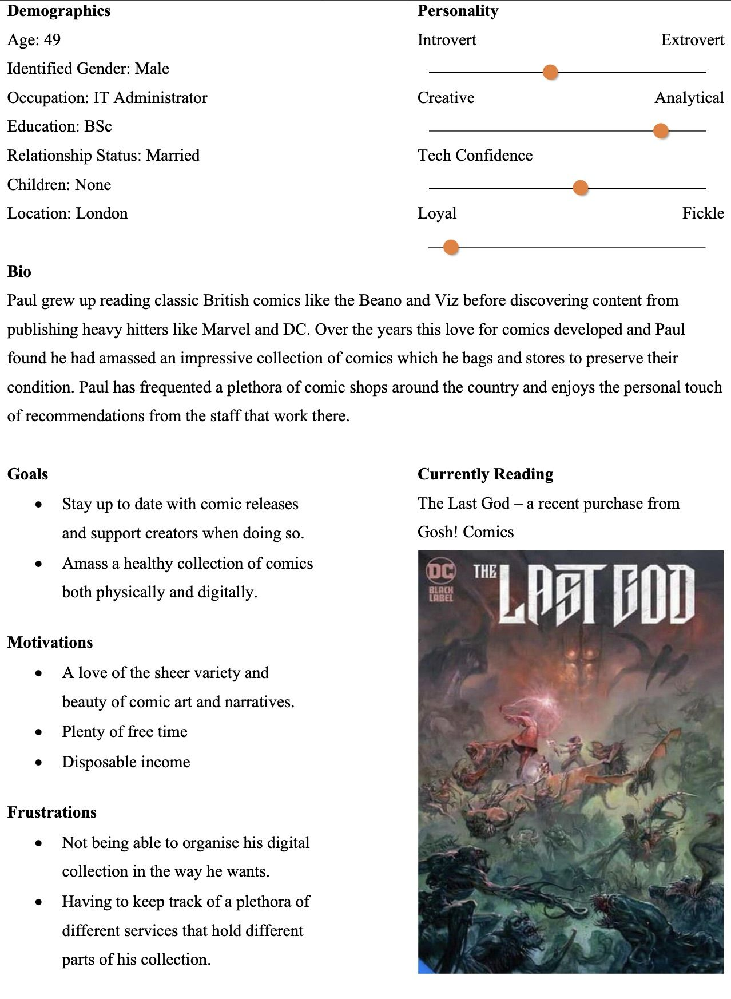
PERSONA: Paul
Paul is in his late 40s, a committed superfan managing a large, multi-platform collection. He cares deeply about organisation, ownership, and being able to find what he wants. The friction in his life is administrative as much as it's about reading itself.
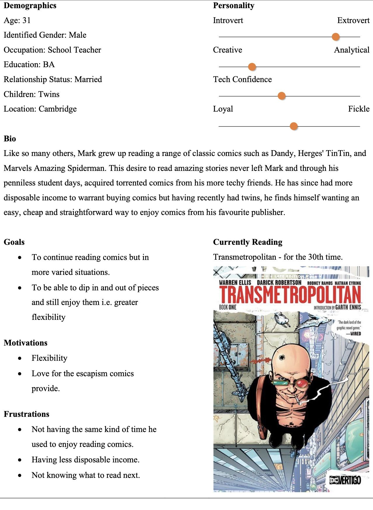
PERSONA: Mark
Mark is a time-poor new dad who just wants a reliable, flexible reading experience he can dip in and out of. He's not managing a collection — he's trying to carve out twenty minutes where he can.
These two people have different problems, but they share a common frustration: no single platform serves
them well enough to make digital comics feel like a natural choice over physical ones.
From the interviews, I developed ten prioritised design requirements — the constraints ZAP! would be
built against.
The design process
Information architecture
With requirements in hand, I sketched out information architecture options and ran a remote card sort to validate the structure with real users. The results were instructive: "Store" won out as the label for the discovery section — and "Serendipity" got an honourable mention, which neatly confirmed that discovery as an experience was a genuine user need, not just a functional requirement.
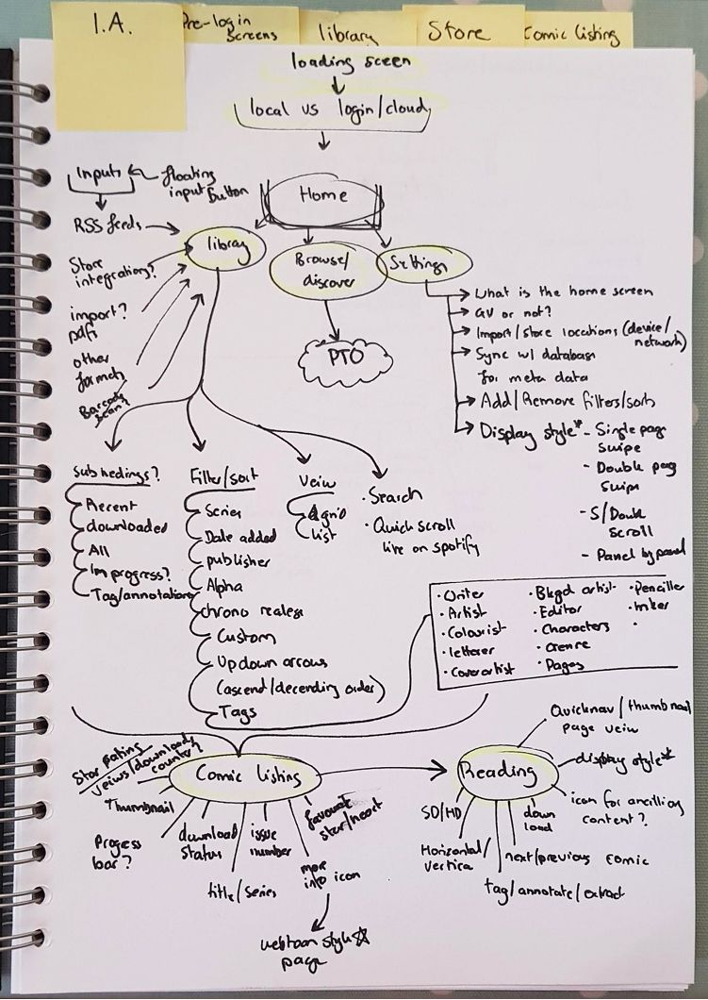
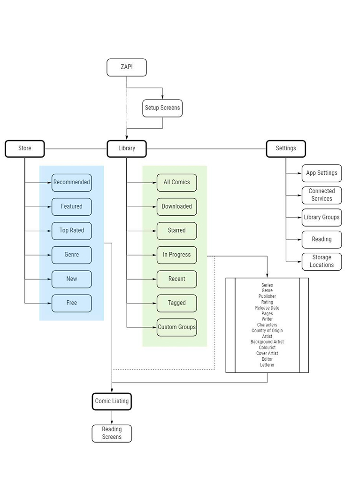
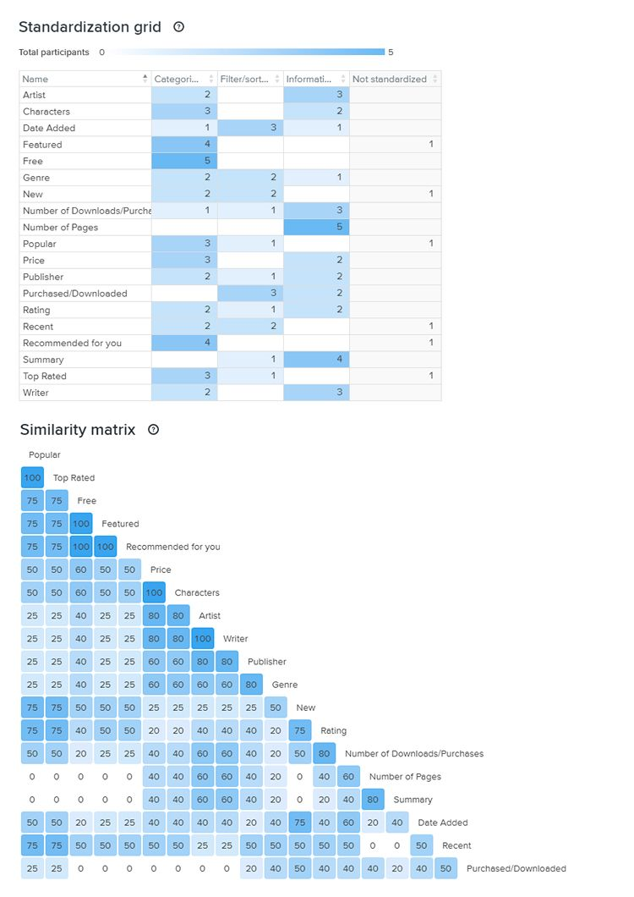
From sketches to prototypes
The design work moved through concept sketches on paper, then low-fidelity wireframes, and finally a high-fidelity interactive prototype. The app is tablet-first — a deliberate choice based on the research, which confirmed that phone reading meant constant zooming while tablets more closely match the proportions of a comic page.
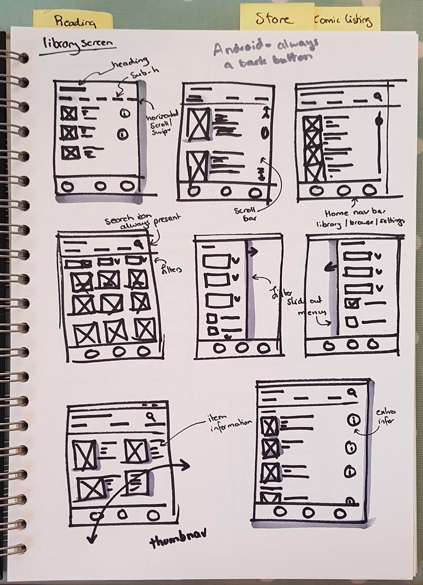
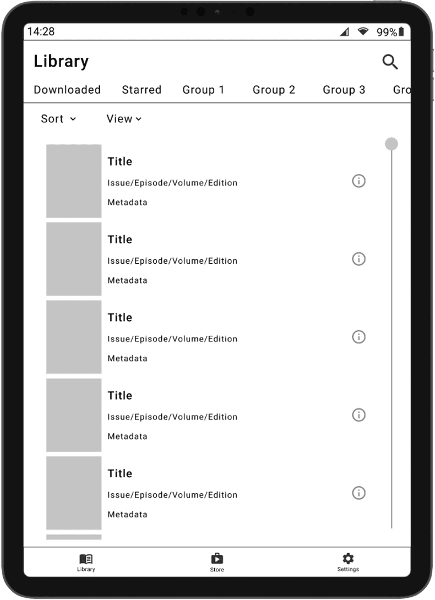
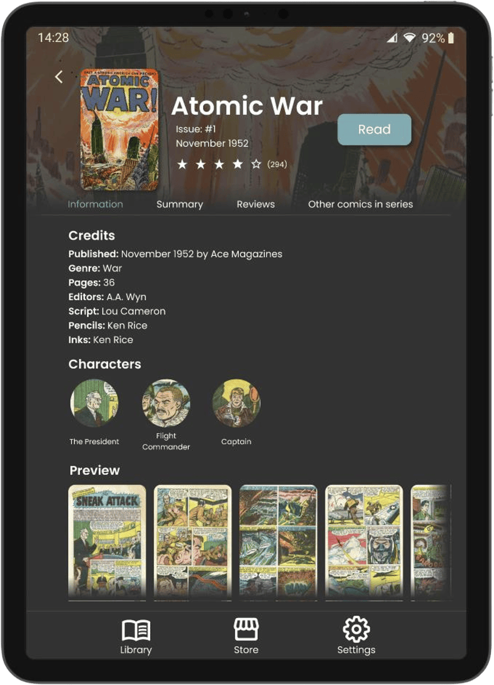
The key screens covered:
- Onboarding and setup flow — connecting existing accounts and importing a library
- Library view — with a filter panel for managing a large collection across series, publishers, and format
- Store / recommendations view — built around discovery as a first-class experience, not an afterthought
- Comic listing page — issue-level information and reading continuity
- Reading UI — the most considered part of the design
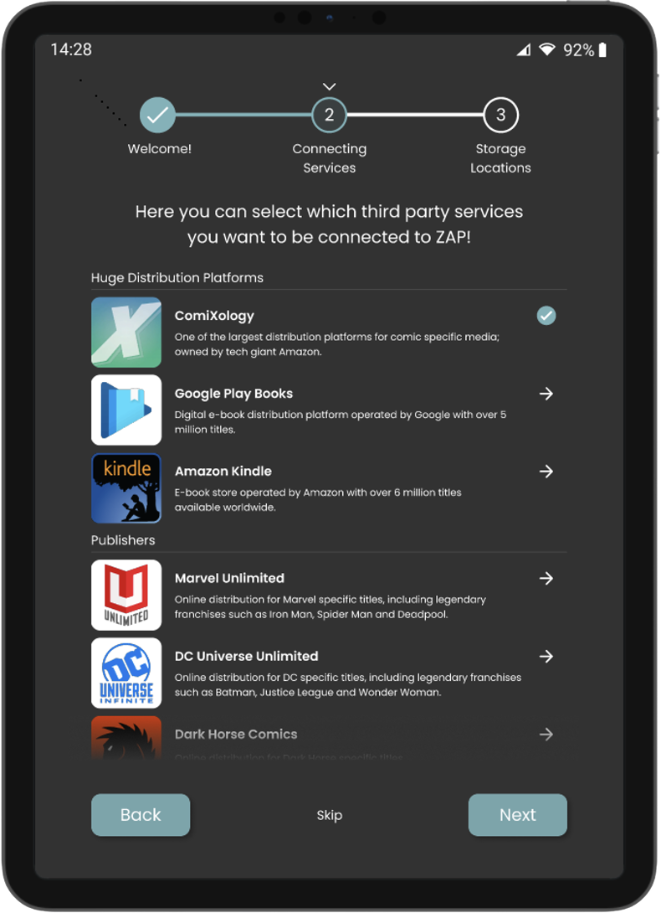
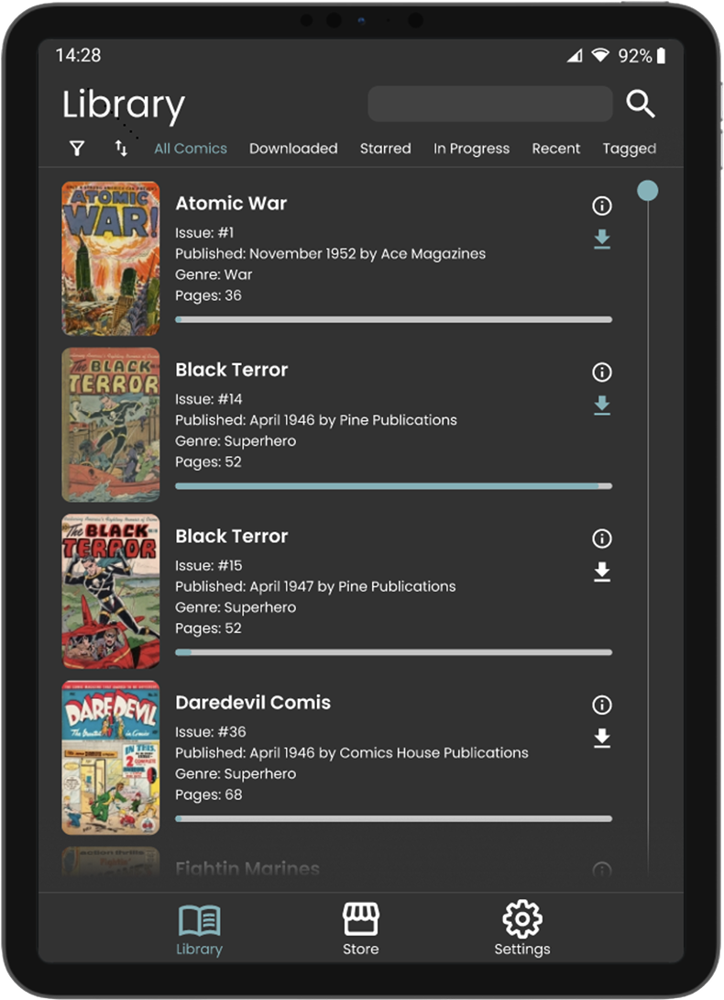
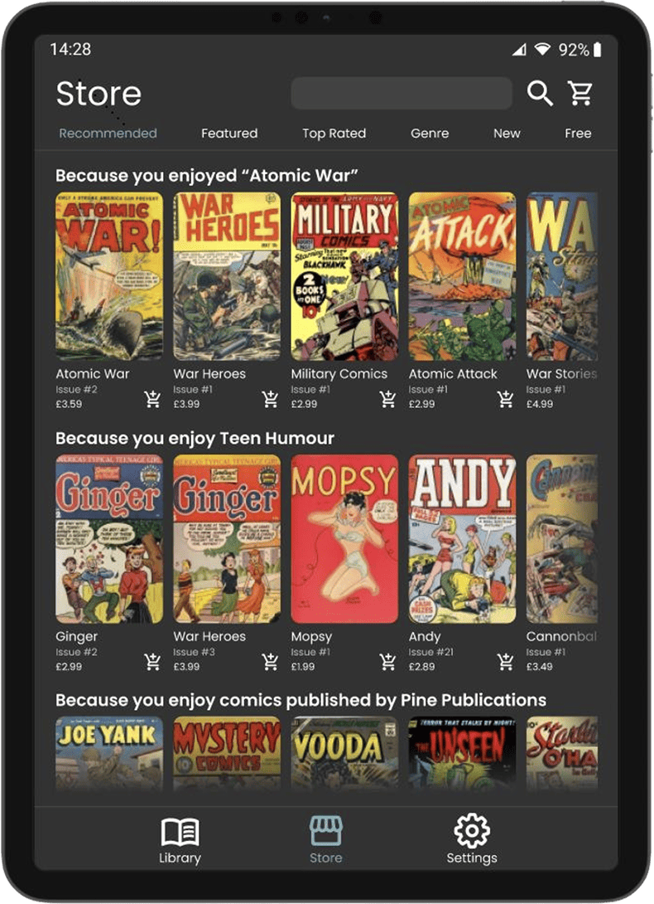
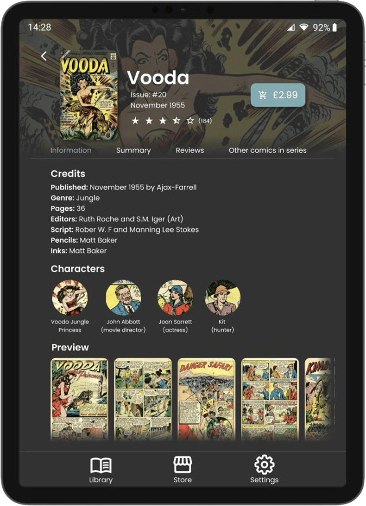
The reading UI
The reading UI is where ZAP! made its clearest design argument. Panel-by-panel mode — the standard
approach across most platforms — was consistently criticised in the research. Readers don't
experience a comic as a sequence of isolated panels; they experience a page, with peripheral context
that informs how they read each panel. Stripping that away might solve the zoom problem, but it
creates a different, arguably worse one.
ZAP! kept the full page view as the default and solved navigation differently. The visual scrubber —
inspired by video editing timelines — sits at the bottom of the reading UI, giving readers a
filmstrip-style overview of the issue that lets them jump and orient without ever losing their place.
It was an original interaction concept that directly addresses a gap I'd identified in the platform
comparison: not one of the three major platforms had solved issue navigation in a satisfying way.
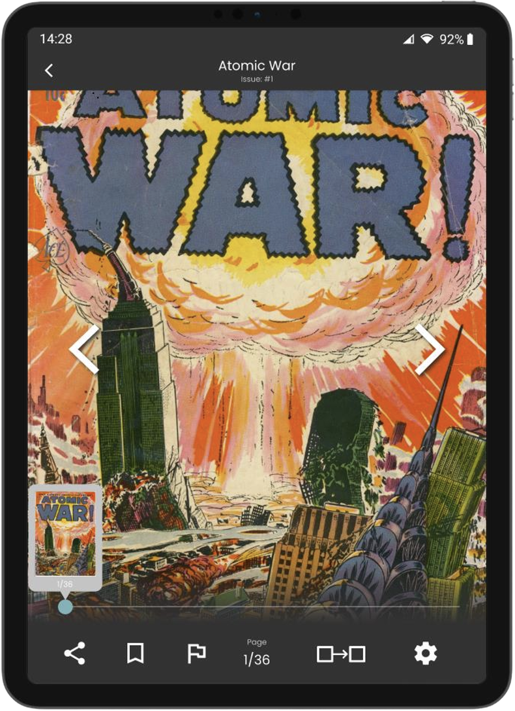
The aggregation question
An early ambition for ZAP! was true cross-platform aggregation — one place to access ComiXology, Dark
Horse, and your local library all at once. That hit a wall quickly: most comic platforms have closed
ecosystems with no open APIs.
Rather than abandon the concept, I made a deliberate call to design for the ideal future state anyway.
The aggregation model is architecturally present in ZAP!, and the research clearly establishes it as a
genuine user need. Whether it's technically realisable today is a separate question. Designing to the
need rather than to the current technical constraints felt like the intellectually honest move — and
it's a stronger design for it.
Evaluation
The high-fidelity prototype was evaluated through three moderated remote user tests (plus a pilot
session), with a SUPR-Q questionnaire at the end of each.
The overall reception was positive. Participants found the visual design clean, the information
hierarchy
logical, and SUPR-Q scores were strong on comfort, aesthetics, and willingness to recommend.
The issues that surfaced were as useful as the praise:
- Search dominated every session. Every participant went to the search bar first for everything — and the prototype didn't fully support that behaviour.
- Iconography in the reading UI caused confusion, particularly in the navigation controls.
- Custom group management didn't match users' mental models. The interaction design needed more work.
- Horizontal scroll affordances weren't obvious enough in a mouse-based remote testing environment — a testing issue rather than a real design flaw.
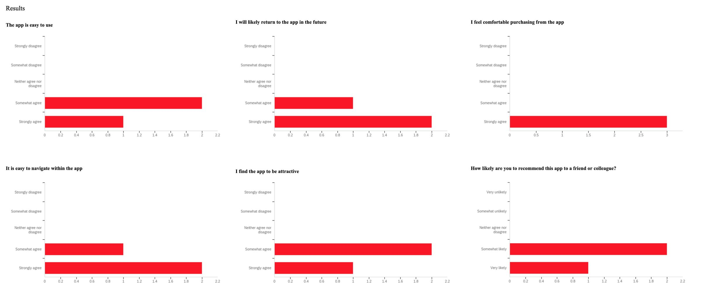
Reflection
The thing I'm most proud of isn't any single screen — it's the coherence of the process. Each phase
genuinely fed the next. The literature validated what the platform analysis found. The interviews
validated both. Every design decision in the prototype is traceable back to a specific requirement. That
kind of end-to-end rigour isn't something you can retrofit.
If I were doing it again, I'd recruit earlier and more broadly. Six interview participants and three
test
participants — all male, mostly British, mostly in a similar age range — is a real limitation, and the
dissertation is honest about that. A more diverse sample would have stress-tested the design assumptions
considerably harder. I'd also push further on prototype fidelity in the areas that mattered most for
testing: search and group management both needed more depth to be properly evaluated.
But the scrubber still holds up. The aggregation argument still holds up. And the problem — the genuine,
frustrating gap in how digital comics are read — absolutely still holds up.